Anabaseios: The Twelfth Circle (Savage) is a high-end duty added in patch 6.41: The Dark Throne. The fight can be unlocked by speaking to Nemjiji in Labyrinthos (8.4, 27.4) after completing Anabaseios: The Twelfth Circle.
The minimum ilvl required to enter this fight is 640.
This guide will be following the Pastebin Strat.
Adds will spawn either North or South. The tanks should be North or South wherever the adds are, at the middle of the field. The party should be opposite of the tanks also at the middle of the field.
Athena will cast Trinity of Souls from bottom to top.
If your team is using the tank invuln strat, or "lazy lasers", be sure to top off the main tank and give them mitigation to survive the Magic-Vuln-boosted auto attack.
Four players (two supports, two DPS) will be tethered and four players (two supports, two DPS) will receive debuffs. The tethered players will stretch their tethers directly opposite from their add, on the edge of the boss's hitbox. The debuffed players will need to drop towers on quadrants, near tethered players. The tower debuff will either be light or dark , and they will need to be dropped next to a laser player of the opposite element.
This mechanic is divided into 3 sets of orb explosions. You will need to be mindful of your DPS-support partner, debuffs, and random role-based movement.
Find the quadrant with the purple or orange tether. Face the boss and spread out (if orange orb) or partner stack (if purple orb). There will be a second orb that is either green (AOE) or blue (donut). A little before the chains resolve, debuffs will appear that affect how you resolve the next two sets of orbs.
Here is an example of partner stacks + donut. Use the chains to help position yourself into an "X", with MT front and HR back.
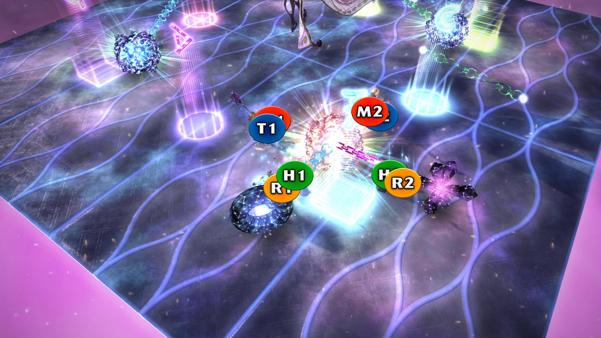Here is an example of spreads + AOE.
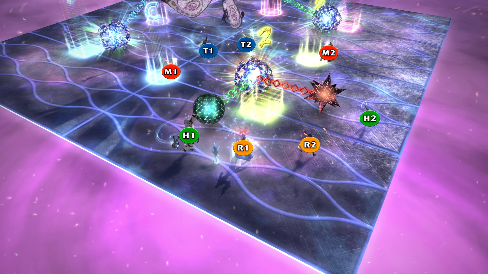After the 1st Orbs resolve, there will be two orbs, one to the left quadrant and one to the right quadrant. Go to the quadrant with the blue donut tether. Here, players will need to look at their debuffs. Everyone should group up near the orb with the blue donut tether, with four players left and four players right.
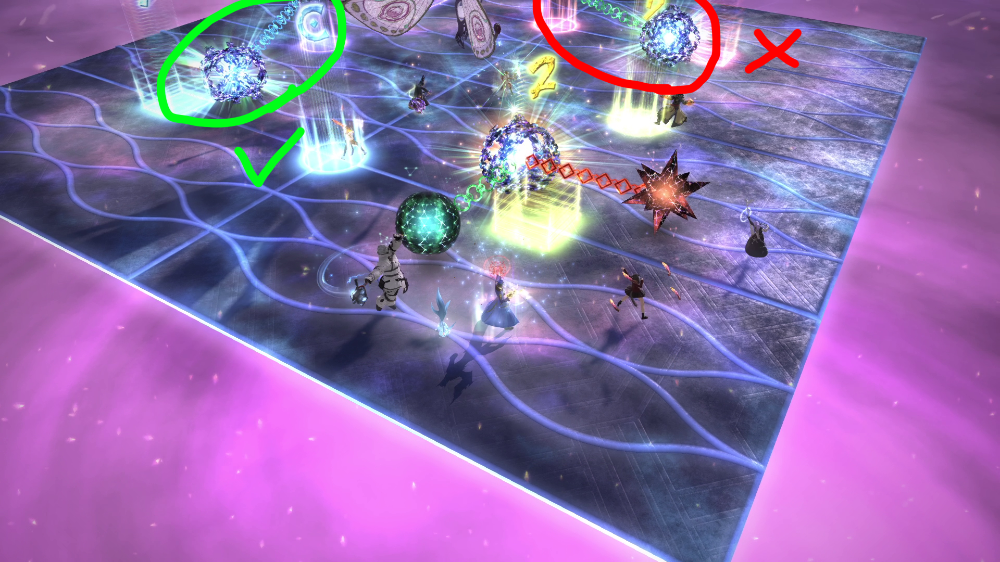Left: , , , and
Right: , , , and
Lights left, darks right, and lasers do opposite. As stated in the intro, light and dark debuffs act as elemental vulnerability debuffs, so light debuffed players getting hit with light attacks would kill them. Thus, the lasers must do opposite.
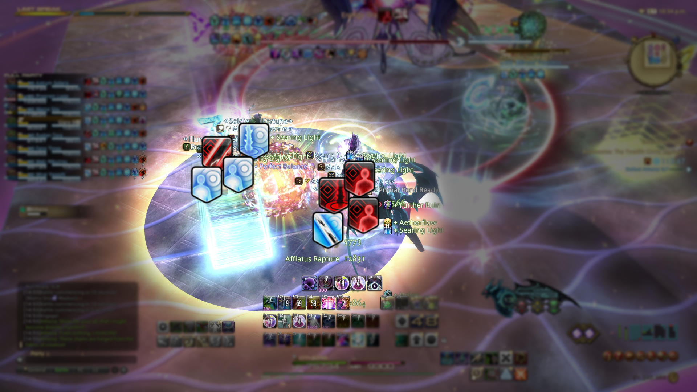Move to the next quadrant in the same direction you have been moving. E.g., if you went left from 1st Orbs to 2nd Orbs, keep going left for 3rd Orbs. This orb will have an AOE then a donut, or a donut then an AOE. After the 2nd attack resolves, towers and AOE debuffs will hit. If your role has the AOE debuff , you will spread out. The two ranged players go back towards the corner, and the two melees run through the boss to the next cardinals.
The other role is responsible for dropping towers and resolving them. Towers players should drop them on the nearest cardinals, lights left and darks right. The players who had lasers on 2nd Orbs will soak towers, with the light laser soaking right, and dark laser soaking left (same priority from 2nd Orbs). The laser players should go to the center of the field after both AOEs go off, and wait there until towers drop. Waiting in the center of the field will prevent them from getting clipped by dropping towers.
Here is a picture of the RaidPlan, plus an edited version that is rotated to how it would look when facing the boss.
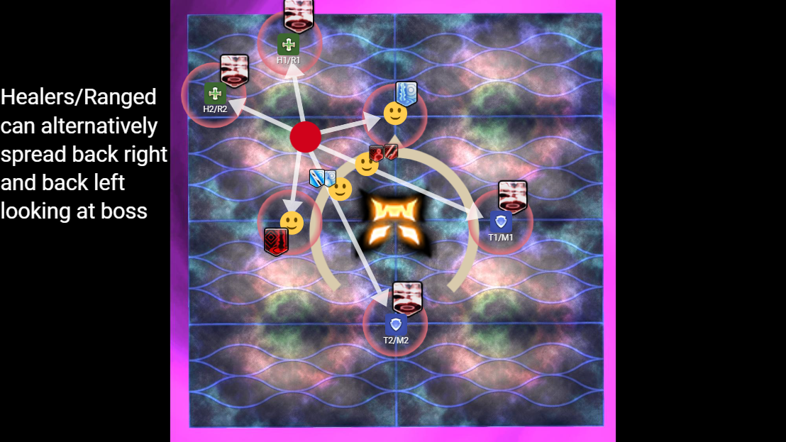 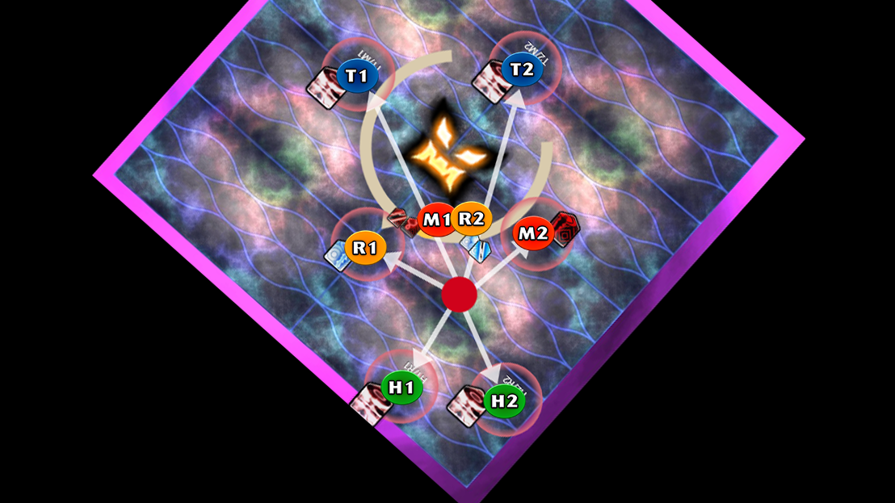Athena will destroy platforms in a zigzag formation, leaving only 4 platforms remaining that cannot be crossed due to the no-jump debuff. Here are the two possibilities for safe platforms. I numbered the safe platforms for reference.


This mechanic involves drastically different movements for DPS and supports, so I will split this part into two parts.
Four adds will spawn, two West and two East. Each DPS will be tethered to one of them. Stretch your tether. Two DPS will be on the (2) platform and two DPS will be on the (3) platform. Players will want to make an "X" with their tethers, crossing them. One angel will always be straight West / East, while the other will be either slightly North of it or slightly South of it. The straight West / East player pulls their tether straight, and the Northish / Southish player pulls their tether crossed.
In the below picture, my angel is Northish of East, and the other DPS is tethered to an angel straight East. They pull it straight, and I cross to make an "X". If you're the straight tether, be mindful not to get shot by the other straight laser on the other platform. Tilt it slightly inward to your platform if needed.
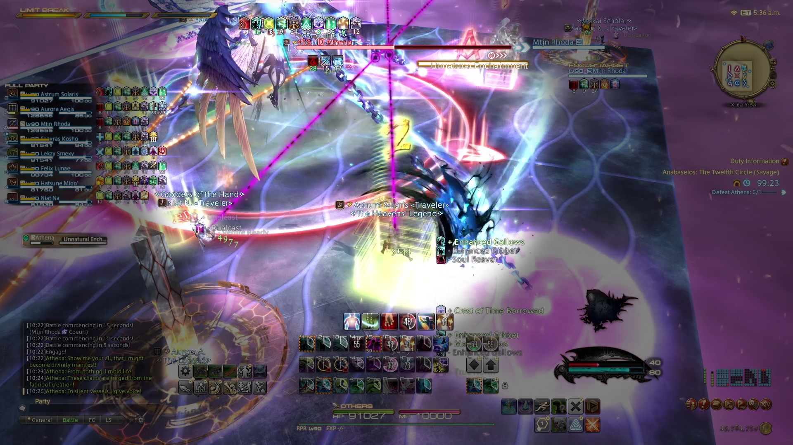After the lasers resolve, DPS players will need to either soak towers or bait lasers depending on what tower debuffs the supports have.
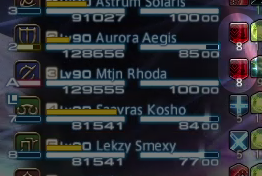In this example, the supports have dark towers. That means that the dark DPS will bait lasers, and the light DPS will soak towers.
The laser-baiter straight tether plants at their marker, hugging the edge. The laser-baiter crossing tether will move forward to the corner of their platform, which is the A marker for the (2) platform and the C marker for the (3) platform.
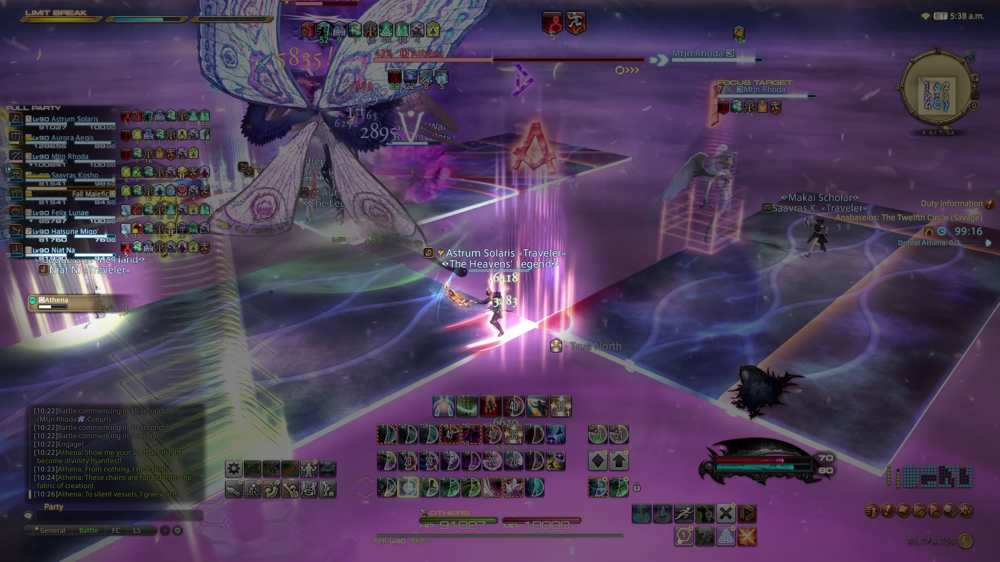The tower-taker straight tether will take the tower in the middle of their platform, dropped by the support in their platform. The tower-taker crossed tether will move to the corner of their platform at the center of their field. Remember not to move in too early, as getting clipped by the support towers dropping will change your light / dark alignment and prevent you from being able to take the tower.
Here is a video example of the straight tether tower-taker. Notice how the Summoner and I do not hug the edge or corner to avoid baiting lasers, while also avoiding the Warrior's tower dropping on us.
Now, let us rewind to go over the support's movement.
Two supports will receive tower debuffs (either or ) and the other two supports will receive a and a . The will drop a + shaped AOE when the debuff expires, and the will drop an x shaped AOE when the debuff expires.
Four towers will spawn, one on each platform, towards the East / West end of the platform. The will take the (1) platform. The will take the (4) platform. The two tower players will take the (2) and (3) platforms.
The priority for the two tower players is West-to-East in the order of H1 > T1 > T2 > H2. H1 will always be West, H2 will always be East, and the tanks will adjust. Tanks adjust if them and their same-group healer both have towers, such as if H1 and T1 both have towers. In that case, T1 flexes East. It is useful to note that which platform (2) or (3) is East or West is random, depending on the zigzag pattern. Just remember that tower players take the middle two safe platforms.
After the towers resolve, the should move to the North corner of the field, and the should move to the corner of their platform / middle of the field / straight South. Drop your AOEs, then move North / South of the angel in your platform to bait line AOEs.
The tower supports need to note their tower color and the color of the DPS tethers in their platform. If the tower is opposite of the DPS tethers, then the support needs to drop their tower in the middle of their platform. If the tower is the same color as the DPS tethers, then the support needs to go to the inner corner of the platform, center of the field. This is so the opposite-colored DPS on the other platform can move to soak the tower despite not being able to switch platforms.
Here is a video example of a support with the tower debuff, who has opposite-colored DPS tethers and needs to drop their tower in the middle of their platform. Note how I kept my distance from the other two DPS in my platform so as not to overlap them with my tower dropping.
Here is the RaidPlan for this mechanic. In this example, supports have light towers. The light DPS move to bait lasers, and the dark DPS will soak towers.
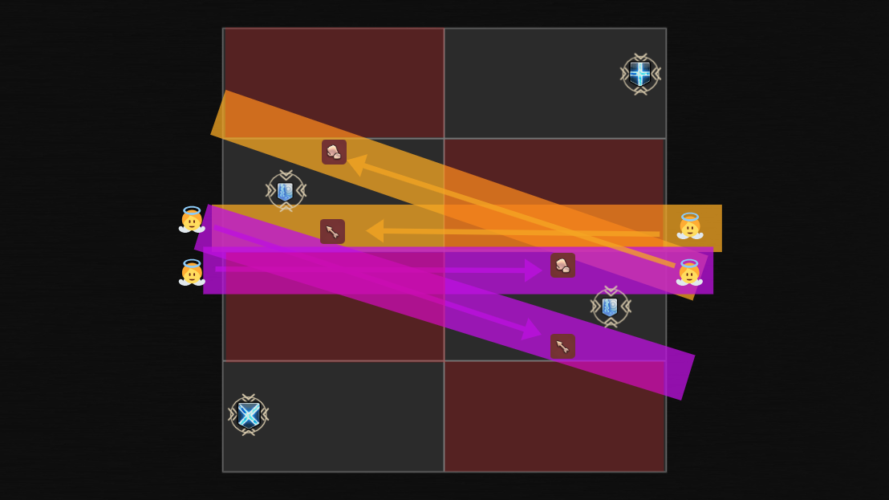 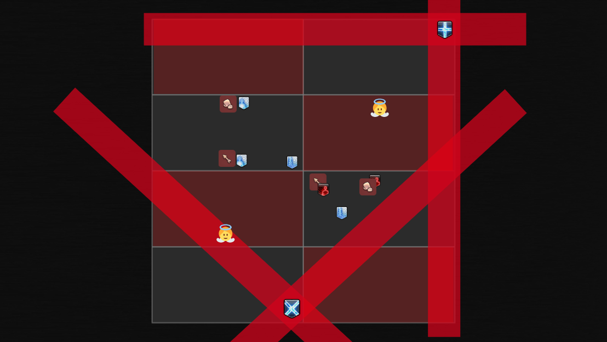 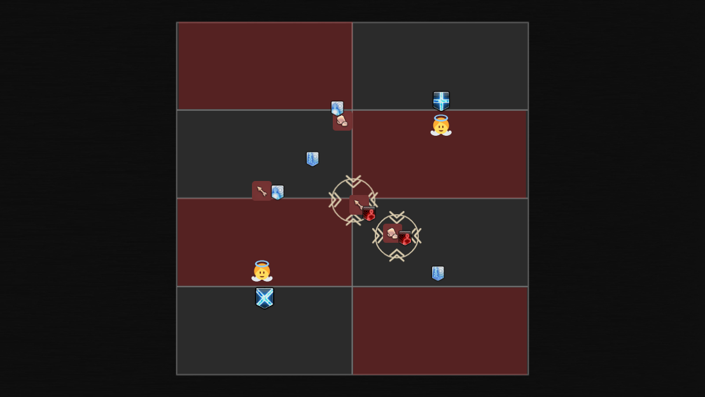 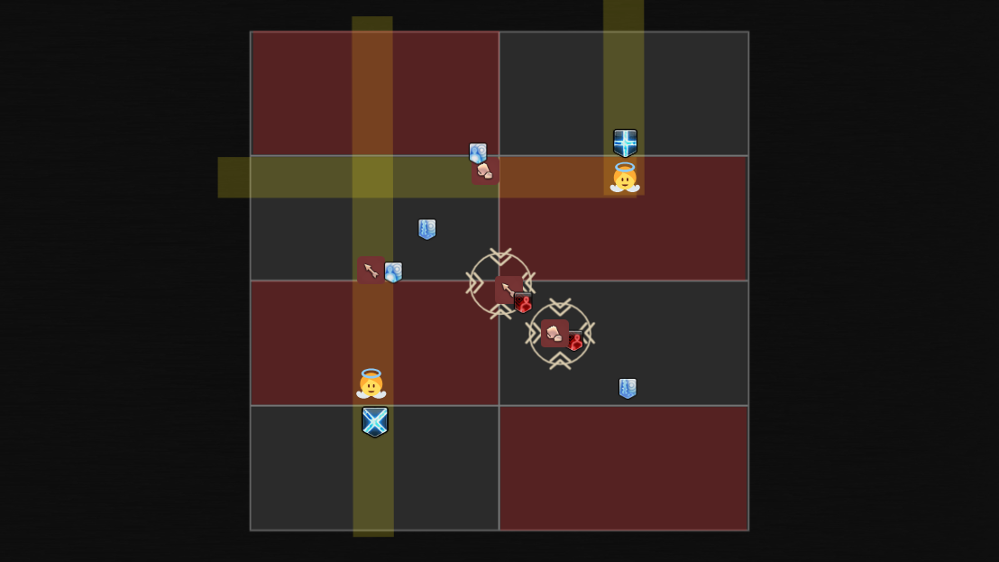Everyone will be selected for Limit Cut, numbered 1 through 8. The number denotes the order that Athena will dash the target, doing a line AOE dash leading into a 2-person stack attack, which also leaves a a puddle behind. Because of the pair mechanic, this Limit Cut is simplified into 1&3, 2&4, 5&7, and 6&8. Each pair will do the same movements, so you only have four movements to learn.
The dash is a distance-based attack, which does more damage with the less distance Athena travels. Thus, to minimize damage, players should try to bait her dashes such that she travels the maximum possible distance. 1&3 start away from Athena. 2&4 start slightly to the right of Athena, and they move into Athena's starting position after the first dash. 5&7 will start West facing Athena and close to middle, and 6&8 will start East facing Athena and at the wall.
The laser baits alternate between odds and evens in the order of 5&7, 6&8, 1&3, and 2&4. This also means they should be baited West, East, West, and East. Be sure not to go close to the center to bait lasers until you see the other side get shot first.
This is what an angel looks like when it does a small avoidable cleave. These are filler attacks between the lasers and can be ignored.
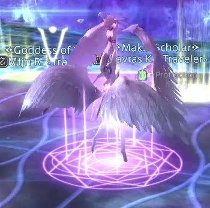This is what an angel looks like when it is about to fire two lasers.
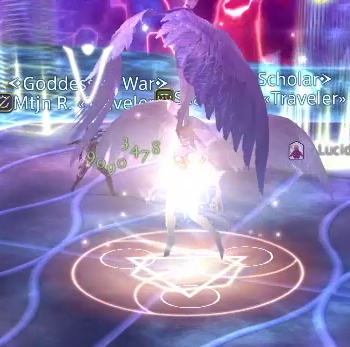Here is what the setup looks like.
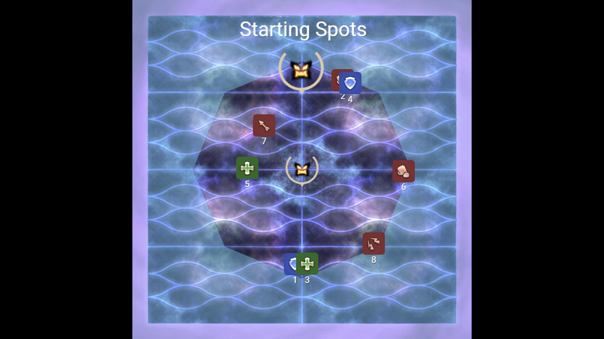To summarize, 1&3 and 2&4 will be hit with two puddles, then they wait at the wall and move in when it's their turn to bait lasers. 5&7 and 6&8 will bait lasers (moving in and out as necessary when it's their turn or not their turn), then after 1&3 and 2&4 are hit with two puddles, 5&7 and 6&8 will swap with them and hug the wall and be hit by their two puddles.
Reminder: always rotate clockwise when baiting puddles.
Reminder reminder: don't be close to the center unless it's your turn to bait lasers. If you're waiting to bait lasers but it's not your turn yet, be at the wall.
Here is a video example of 5&7. Note how they start West facing Athena and are close to the center. After baiting lasers, the pair move out to the wall. They swap with 1&3 after that pair baits two puddles.
Here is a video example of 6&8. Note how they start East facing Athena and stay at the wall until 5&7 get shot, then they move in afterwards. Then they swap with 2&4 after that pair baits two puddles.
Here is a video example of 2&4. They start at the corner to the right of Athena, then move into her starting position after she does her first dash. They rotate clockwise while baiting two puddles. Afterwards, they swap with 6&8 and wait at the wall until 1&3 are shot, then move in afterwards.
Athena will do three sets of orb explosions and a bottom to top Trinity of Souls triple wing cleave, with the orb explosions and half-room wing cleaves happening at about the same time, except for the third one.
For the first movement, the party should group up around the North or South orb that has a short, cardinal purple tether. Players will partner stack in the half of the room that is safe, with M1 and T1 front and R2 and H2 in the back. In the below example, the party starts south at the C marker.
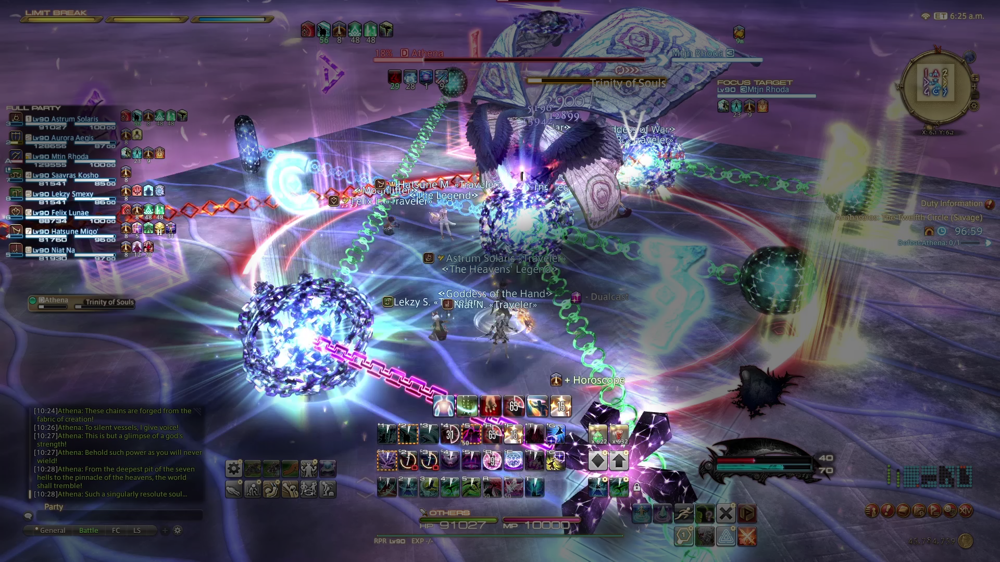For the second movement, the party should sprint to the center of the field, where there will be a blue donut AOE. Be mindful of her triple wing cleave.
For the third movement, the party will end on the long diagonal chain that is either orange or purple. That orb will either be North or South, meaning it could be the orb the party started on. This means the party will have to either double back (start, middle, start) or go straight through (start, middle, forward). The above example is a straight through pattern. The below example is a double back pattern.
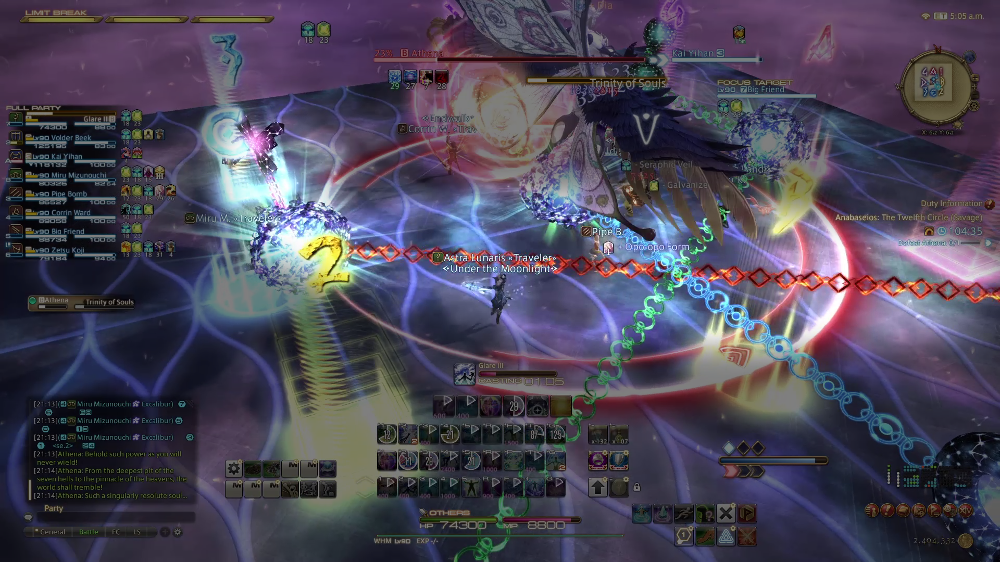The third set of orbs resolve shortly after the last wing cleave, so you have time to dodge the half-room cleave, then do either spreads or partner stacks relative to facing the boss (like in Superchain Theory 1).
Here is a video example of double back with an early switch on the wing cleaves. Note the Sprint and the order of mechanics resolving.
Here is a video example of straight through with a late switch on the wing cleaves. M1 and T1 must be mindful not to get too close to the middle of the field on the first movement, otherwise they will get clipped by the green AOE.
This is the final mechanic. It is far simpler than Superchain Theory 2A. Two orbs will spawn, one close North and one close South. The party should be near the blue tether donut. Then, two orbs will spawn East and West. One will have an orange or purple chain, and the party will go to that orb after the blue tether donut resolves. Finally, two more orbs will spawn North and South, and one will have an orange chain with a green AOE. That is the third and final set of orbs.
After the first orb, the blue tether donut, resolves, the party will move East or West to the orange or purple chain while dodging Athena's Parthenos, which is her front / back cleave from Normal mode. Resolve the spread or partner stack, then look North. Two angels will do large line AOEs, the same size as the ones from the end of Paradeigma 2. Then do spreads around the orange tether North or South. Make sure to stay away from the orb, as a green AOE detonates at the same time. Finally, Athena will tether to 7 platforms and break them. The one safe platform will be one of the four platforms North or South, near the final orb. Dodge quickly to avoid falling.
To summarize:
After this, Athena will do two On the Soul raidwides and then enrage. Push her to 0% to advance to the next phase.